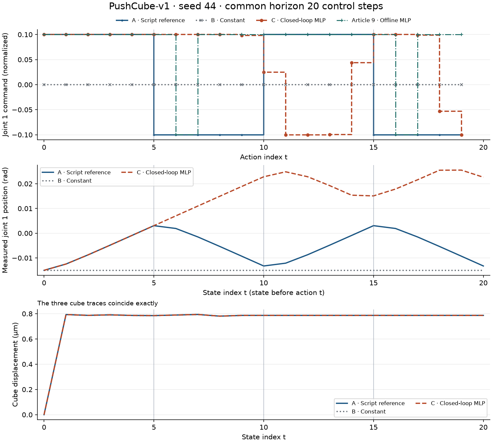
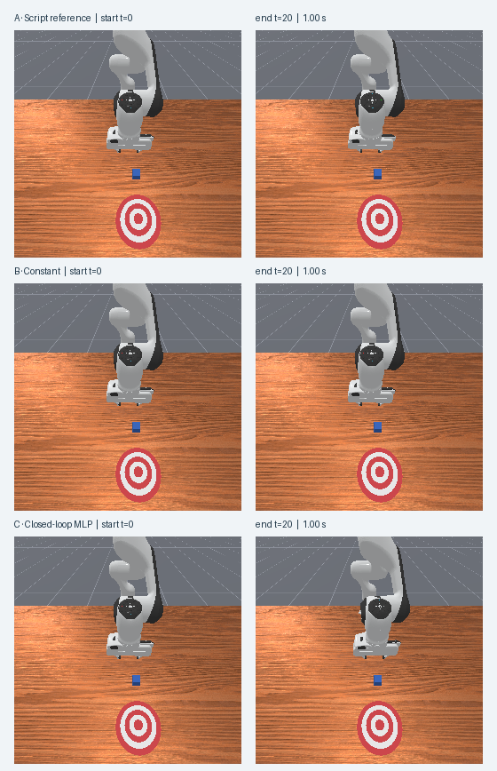

公开包包含真实数值记录、原尺寸相机帧、冻结统计和已保存权重，解压后可在 CPU 上复算指令与指标。
第九篇在保存的关节状态上评估了一个小型行为克隆模型。在两次换向位置，模型给出了与脚本相反的第一关节指令。如果真的把指令发给仿真器，下一步模型看到的关节状态会变成什么？
这次仍使用 PushCube-v1 的 seed44。第一次换向发生在动作 t=5，脚本发出约 −0.1，模型发出约 +0.1。到了状态 t=6，两组第一关节已经相差约 0.00510 rad。在这一时刻，第九篇的模型读到脚本状态后输出约 −0.09990，同一份权重读到自己走出的状态后却继续输出约 +0.10000。
同一起点，三种指令
三组依次创建单个 Panda 环境，并显式调用一次 reset(seed=44)。A 按顺序执行第七篇保存的 20 个动作，用来复查仿真参考轨迹。B 的第一维固定为训练集动作均值 0。C 每一步用当前关节状态生成第一维。三组动作的第 2～7 维均为 0，第 8 维均为 1，保持相同的夹爪打开目标。
每组开始前都检查了初始 qpos、qvel 和方块位姿，实测差异为零。A 组的关节状态、控制器目标、方块位姿、奖励、回合标志及 RGB 都复现了相应历史记录。三个环境采用相同的 pd_joint_delta_pos 配置，控制频率为 20 Hz，物理频率为 100 Hz。
让下一次推理读取刚得到的状态
离线评估依次读取磁盘上的 obs[0]、obs[1]。模型在 obs[0] 的输出不会影响文件中的 obs[1]。闭环执行里，当前动作经过控制器和物理仿真产生新观测，下一次推理就读这份观测。
下面是 C 组每一步的关键操作。这里的 qpos、qvel 来自当前观测的独立副本，各为 (1,9)。第八篇冻结统计完成逐维变换后，输入为 (1,18)。单个输出写入 8 维接口的第一维。
x = torch.cat(
(
normalizer.transform("qpos", qpos[0:1, :]),
normalizer.transform("qvel", qvel[0:1, :]),
),
dim=1,
)
with torch.inference_mode():
u1 = model(x).item() # model 已加载第九篇权重并调用 eval()
action = np.zeros(8, dtype=np.float32)
action[0] = u1
action[7] = 1
# 正式脚本先验证动作边界，再持久化一次 step 调用的账本。
obs, reward, terminated, truncated, info = env.step(action)
脚本先保存初始观测，再保存每次调用返回的观测。obs[t]、action[t] 和 obs[t+1] 因此能一一对齐。20 个动作对应 21 个状态，最后一份状态没有下一条动作。相机记录供人观察。物体位姿和控制器目标单独存放在诊断字段，策略只接收关节状态。
归一化指令的 +0.1 在本控制器中对应约 +0.01 rad 的第一关节目标增量。实际角度由仿真器积分得到，可以从 qpos 读取。指令、目标和实际角度各自有自己的量纲和时间位置。 ManiSkill 3.0.1 控制器文档
换向之后发生了什么


| 动作索引 | 仿真时间（s） | A 脚本指令 | 第九篇离线 MLP | C 闭环 MLP |
|---|---|---|---|---|
| 5 | 0.25 | −0.10000 | +0.10000 | +0.10000 |
| 10 | 0.50 | +0.10000 | +0.10000 | +0.02474 |
| 15 | 0.75 | −0.10000 | +0.10000 | +0.10000 |
动作索引从 0 开始。在动作 t=5 发出前，A 和 C 的第一关节角度都是约 0.003046 rad。执行该动作后，两组在状态 t=6 分别变为 0.001910 rad 和 0.007009 rad。使用 1e-6 rad 阈值，这是第一关节首次可检出的偏离。同一时刻，闭环预测与离线预测也首次相差超过 1e-6。此时两个预测使用的是不同状态。脚本动作可以对照同一时刻的指令，无法给出偏离参考轨迹后的状态应执行什么动作。
| 组别 | 运行步数 | 第一关节净变化（rad） | 方块终点位移（µm） | 累计 reward | 成功步数 |
|---|---|---|---|---|---|
| A 脚本 | 20 | +0.001758 | 0.7864 | 2.10997 | 0 |
| B 常数 | 20 | 0.000000 | 0.7864 | 2.08218 | 0 |
| C MLP | 20 | +0.037642 | 0.7864 | 2.14800 | 0 |


三组方块位姿轨迹完全重合，终点只有约 0.79 微米的位移，success 全程为 false。C 组累计奖励数值最高，记录的任务成功次数仍是零。三组各执行 1.00 秒，到达预先设定的 20 步预算时停下，最后一条记录的 terminated 和 truncated 都为 false。
如何核对实验
用 运行说明中的命令可在 CPU 上离线重读数值轨迹、63 张原始 PNG 和调用账本。验收将 C 的当前状态按冻结统计重新变换并逐项核对指令，最大绝对差为 1.06×10⁻⁷。全部 PNG 与保存的观测数组逐像素相同，30 项历史输入和参考代码的 SHA-256 前后一致。 逐步数据 · 独立验收
本次权重来自第九篇，seed44 已用于第九篇的离线验证。这个对照记录了一次固定起点下的小幅关节运动，能观察状态反馈如何改变后续指令。评估新初始条件的泛化或推方块的任务能力，需要另外设计实验。